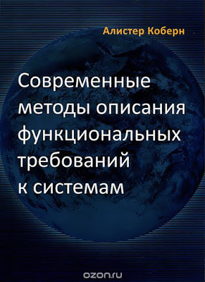

Часть первая. О чем? До сего времени я был знаком с шаблоном юзкейса
Я как {роль} хочу {что-то}, чтобы {цель}.
Казалось бы, где тут писать книгу на 250 страниц? Как выяснилось - юзкейсы, как и все остальное - с большим удовольствием можно делать неправильно. Итак, что такое юзкейс? Повествование о взаимодействии человека с системой.
Особенности
Практически любую задачу в тестирование стоит передавать в виде истории. Или пункта в истории.
И совершенно необходимо выяснять ее цель до уровня если не птицы, то моря. "Я сделал так чтоб воркер добавлял одну штуку в другую очередь не история."
История - форматированный нарратив, хоть и имеющий ограничения, но все же - являющийся текстом на родном языке.
Если заставить человека написать хотя бы страницу текста на его родном языке, то очень хорошо становится видна его дурь.
Автор глумится над диаграммами.
Часть вторая. Зачем?
Каждый новый шаг в выбранной вами профессии стоит дороже.
Обращаю внимание, что я перечислял развитие одних и тех же навыков.
Можно использовать модель пирамиды - чтоб подняться на уровень выше - нужно расширить базу. Чтоб хорошо тестировать нужно немного программировать, немного сисадминить. Уверен, что когда-то, чтоб стать еще лучше в тестировании нужно будет разобраться в теории музыки.
Это всего лишь модель.
Есть и другая модель - когда знания и умения дают в совокупности синергетический эффект. У человека становится шире круг инструментов, которыми и с которыми он работает. Богаче язык, больше метафор, больше способов посмотреть на мир и возможность выбирать самый эффективный из них.
С разной степенью успешности я занимался вопросами автоматизации около 6 лет и теперь не считаю, что достиг высот. Но двигаться дальше мне мешает отсутствие базы, отсутствие сопутствующих знаний.
В частности - аналитических. Многим известно, что я считаю автоматизацию тестирования, не встроенную в процесс разработки - вредной.
А если ее необходимо встраивать - значит необходимо действовать совместно с другими людьми и другими профессиями. В частности - передавать свои мысли и ставить задачи.
Это профессия аналитика.
Я делю знания аналитика на две части -
Первая это инженерия систем, проектирование систем, создание моделей - все вот это. Описание и создание неких ментальных конструкций.
Вторая - коммуникация. Представление этих конструкуций в понятной форме.
Таблицы определения данных, диаграммы состояний, макет интерфейса, модель бизнеса, нарратив.
И в том числе - юзкейсы, варианты использования.
Как они мне могли бы пригодиться?
Менеджеры не звери и программисты не сволочи. И часто могут хотеть помочь нам. Зачастую - в случайный момент времени нам выдается значительный ресурс программиста. И я ставлю 5 к 9, что если каждому из вас выдать программиста на неделю, то вы не придумаете ничего полезней чем "чини старые баги". и 7 к 9, что даже если придумаете, то это будет абстрактное желание в виде устного творчества.
К чему я? Тестировщики часто ставят задачи. Множество микрорешений на уровне продукта. Задания на доработку тестирующей системы, создание заглушек, инструменты сопутствующей автоматизации.
А теперь попробуйте вспомнить, из за чего программисты делают добрую часть ошибок? Из за некачественного задания.
Автотесты - большой продукт. Сотни тысяч строк. Сколько у них постановок? А почему? Я видел у 2 команд. Удивите меня.
А можно ли назвать задания которые ставят тестировщики качественными?